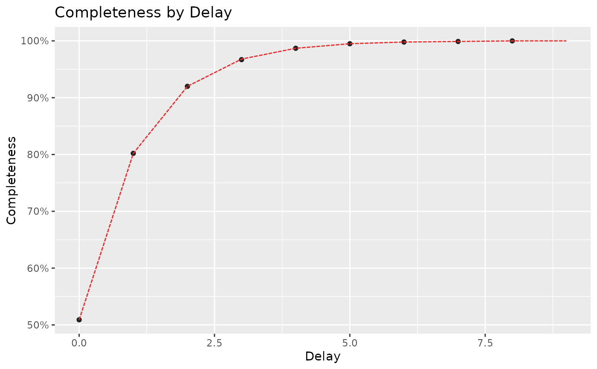

Creates a scatter plot of reporting completeness against reporting delay.
If a col_completeness_modelled is present, it will be shown as a dotted line.
Usage
plot_delays(
df,
col_completeness_obs,
col_completeness_modelled = "",
group_cols = NULL,
color1 = "#222222",
color2 = "firebrick2",
limits_y = c(NA, NA)
)Arguments
- df
A data.frame containing 'delay' and
col_completenesscolumns. An optionalmodelledcolumn- col_completeness_obs
Column name for the Observed Completeness. (dots)
- col_completeness_modelled
Column name for the Modelled Completeness. (line)
- group_cols
Optional character vector of column names for grouping.
- color1
Color for observed data. (dots)
- color2
Color for modelled data. (line)
- limits_y
vector to be passed to limits of
ggplot2::scale_y_continuous.
Examples
delays <- data.frame(
delay = 0:9,
completeness = c(0.509, 0.802, 0.920, 0.967, 0.987, 0.995, 0.998, 0.999, 1, NA),
modelled = c(0.509, 0.802, 0.920, 0.968, 0.987, 0.995, 0.998, 0.999, 1, 1)
)
plot_delays(
df = delays,
col_completeness_obs = completeness,
col_completeness_modelled = modelled
)
#> Warning: Removed 1 row containing missing values or values outside the scale range
#> (`geom_point()`).
